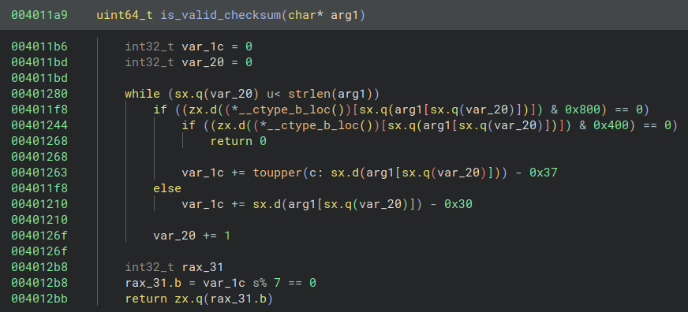
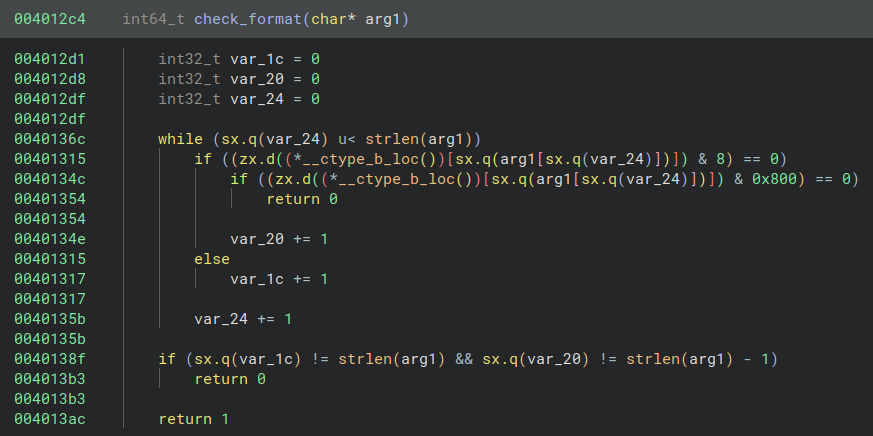
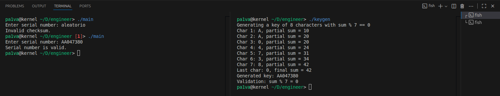

Author: pa1vaDate: 2025-10-03
Linkedin: https://www.linkedin.com/in/maiquelpaiva/
Sumario
I. Introdução
- I.II O que é KeyGen?
- I.III Função
is_valid_checksum - I.V Função
check_format - I.V Resumo sobre as Funções
II. Writing a KeyGen
- II.I Função
value_to_hexchar - II.II Função
needed_mod7 - II.III
main - II.IV Gerando os primeiros 7 caracteres
- II.V Calculando o último caractere
- II.VI Finalizando a chave
- II.VII Impressão da chave e validação
- II.VIII Resumo do funcionamento do keygen
III. Resultado
Introdução
O desafio é "Write a Keygen", o nome do desafio já
diz o que devemos fazer. Este desafio é voltado para
Unix/Linux. O author deste desafio é chamado de
syscall. Peguei este desafio na plataforma https://crackmes.one.
Ferramenta que eu usei: Binary
Ninja.
O que é KeyGen?
Um keygen (gerador de chaves) é um programa que cria códigos ou “chaves” válidas para softwares que usam algum tipo de proteção. Essas chaves normalmente verificam se você pode ativar ou desbloquear o software. O keygen faz com que o código gerado passe na validação do programa.
Doing Reverse in Binary
Função 'is_valid_checksum'

Objetivo da função é verificar se tem algum tipo de "checksum" ou validação de string.
Vamos analisar:
var_1c = 0 → vai acumular algum valor baseado na string.
Loop sobre cada caractere da string (var_20 é índice).
Verifica se o caractere não é alfanumérico (usando __ctype_b_loc(), flags de ctype).
- Se não for alfanumérico ou não for letra/número, retorna 0 → string inválida.
Se for letra: var_1c += toupper(c) - 0x37
- 0x37 é 55 em decimal
- Isto mapeia letras A-F (em ASCII) para valores 10-15, típico de conversão hexadecimal.
Se for número: var_1c += caractere - '0' → pega valor numérico.
Ao final: var_1c % 7 == 0 → retorna 1 se a soma módulo 7 for zero, 0 caso contrário.
Resumo: Essa função valida se a string contém apenas caracteres hexadecimais e se a soma deles (com A=10..F=15) é divisível por 7.
Função 'check_format'

Objetivo: Validar o formato da string.
Vamos analisar:
Inicializa contadores var_1c e var_20.
- var_1c → conta dígitos.
- var_20 → conta letras.
Loop sobre cada caractere.
- Se for um dígito (isxdigit ou isdigit?) → var_1c++
- Se for uma letra → var_20++
- Se não for letra nem dígito → retorna 0 → inválido
Ao final, verifica:
if (var_1c != strlen(arg1) && var_20 != strlen(arg1) - 1)
return 0;Ou seja, aceita ou string só com dígitos, ou string com todas letras exceto uma posição.
- Retorna 1 → válido, 0 → inválido.
Resumo: Confirma que a string está no formato esperado, ou seja, provavelmente um alfanumérico “quase” todo dígito ou letra.
Resumo sobre as Funções
check_format() garante que a string
tem apenas letras e/ou dígitos e segue um padrão
específico.
is_valid_checksum() garante que a
string passa numa checagem matemática simples (soma
módulo 7).
Juntas, provavelmente formam a validação de uma “key” ou código, algo típico em um serial ou keygen.
Writing a KeyGen
Função
value_to_hexchar
char value_to_hexchar(int val) {
if (val >= 0 && val <= 9) return '0' + val;
if (val >= 10 && val <= 15) return 'A' + (val - 10);
return '?';
}- Converte um valor numérico (0–15) para um caractere hexadecimal.
- Exemplo:
- 0 →
'0' - 9 →
'9' - 10 →
'A' - 15 →
'F'
- 0 →
- Retorna
'?'se o valor estiver fora do intervalo.
Função
needed_mod7
int needed_mod7(int sum) {
int rem = sum % 7;
if (rem < 0) rem += 7;
return (7 - rem) % 7;
}- Calcula o quanto falta para a soma ser múltiplo de 7.
Vamos calcular:
1. rem = sum % 7 → resto da divisão da
soma por 7. 2. Se o resto for negativo, ajusta para
positivo. 3. Retorna 7 - rem módulo 7 →
valor necessário para que
(sum + valor) % 7 == 0.
Exemplo:
sum = 23→23 % 7 = 2→needed_mod7 = 5- Adicionando 5:
23 + 5 = 28, e28 % 7 = 0✅
main
srand((unsigned int)time(NULL));
int length = 8;
int sum = 0;
char key[9];- Inicializa o gerador de números aleatórios com
time(NULL). - Define comprimento da chave
(
length = 8) e soma acumulada (sum = 0). key[9]→ espaço para 8 caracteres +\0para finalizar string.
Gerando os primeiros 7 caracteres
for (int i = 0; i < length - 1; i++) {
int val = rand() % 16;
key[i] = value_to_hexchar(val);
sum += val;
printf("Char %d: %c, partial sum = %d\n", i + 1, key[i], sum);
}- Sorteia 7 valores aleatórios entre 0 e 15 (0–9 e A–F).
- Converte cada valor em caractere hexadecimal.
- Soma os valores (
sum) para acompanhar o checksum. - Mostra cada caractere e soma parcial na tela.
Calculando o último caractere
int last_val = needed_mod7(sum);
if (last_val > 15) last_val = 15;
key[length - 1] = value_to_hexchar(last_val);
sum += last_val;- Usa
needed_mod7(sum)para determinar o valor que faz a soma ser múltiplo de 7. - Garante que o valor final não passe de 15 (máximo permitido em hexadecimal).
- Converte para caractere e adiciona à chave.
- Atualiza a soma final.
Finalizando a chave
key[length] = '\0';- Termina a string com o caractere nulo
(
\0) para poder imprimir como string em C.
Impressão da chave e validação
printf("Last char: %c, final sum = %d\n", key[length - 1], sum);
printf("Generated key: %s\n", key);
printf("Validation: sum %% 7 = %d\n", sum % 7);Mostra:
- Último caractere e soma final.
- A chave gerada completa.
- Validação:
sum % 7deve ser 0 ✅
Resumo de como funciona nosso keygen
- Sorteia 7 caracteres aleatórios (0-9, A-F).
- Converte e soma seus valores numéricos.
- Calcula qual valor deve ser o último caractere
para fechar o checksum
(
sum % 7 == 0). - Gera a chave final de 8 caracteres com soma divisível por 7.
- Mostra passo a passo (debug) e valida a chave.
Resultado

Obrigado a todos, bom aprendizado!